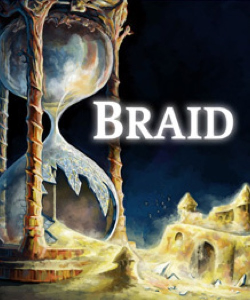

Platformer · 2008
Braid
Time manipulation and painted backdrops kicked open the indie decade.

Cover: Wikipedia: Braid (video game)
Facts
- Released
- 2008-08-06
- Genre
- Puzzle-Platformer
- Category
- Platformer
- Platforms
- PC, PlayStation
- Developers
- Jonathan Blow
PC requirements
- Minimum
- [object Object]